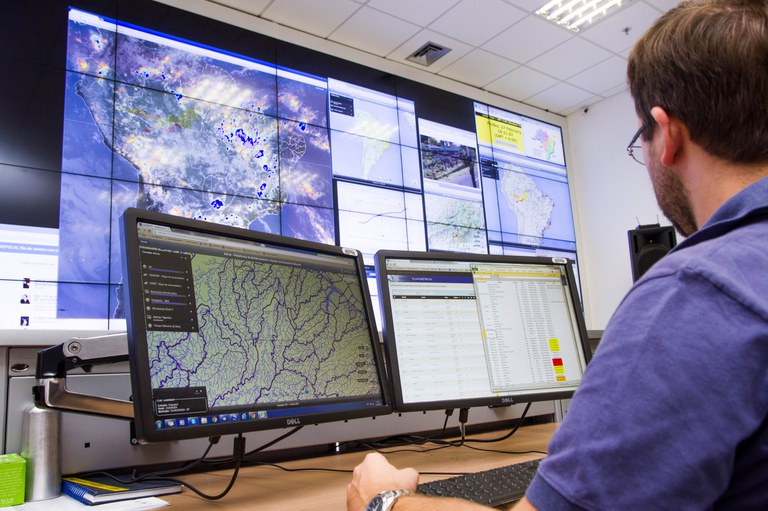

Resumo
Este debate reúne questões centrais sobre os limites e as potencialidades da tecnologia frente aos desastres naturais. Abaixo estão perguntas-chaves acompanhadas de uma análise concisa para orientar a discussão e o desenvolvimento de práticas mais justas e eficazes.
Questões e análises
-
A tecnologia realmente consegue prever desastres naturais com precisão, ou estamos colocando nossas esperanças em ferramentas que não são infalíveis?
A tecnologia avançou muito na previsão de desastres naturais, especialmente com o uso de satélites, sensores e modelos computacionais. No entanto, ela ainda não é totalmente precisa, pois depende de fenômenos complexos e muitas vezes imprevisíveis. A tecnologia ajuda a reduzir riscos, mas não os elimina. Portanto, não devemos enxergá-la como solução perfeita, e sim como uma ferramenta que melhora nossa capacidade de antecipação, mas que precisa ser acompanhada de estratégias de prevenção, educação e planejamento territorial.
-
Se as tecnologias de alerta precoce podem salvar vidas, por que ainda existem tantas vítimas de desastres naturais em áreas de risco?
A existência de alertas não garante automaticamente a segurança da população. Muitas regiões vulneráveis sofrem com problemas como falta de acesso à tecnologia, comunicação deficiente, ausência de infraestrutura adequada e até a resistência cultural em seguir avisos de evacuação. Além disso, a pobreza obriga muitas famílias a residirem em áreas perigosas, mesmo sabendo do risco. Assim, o número de vítimas não revela falta de tecnologia, mas sim desigualdade social, falhas na urbanização e a dificuldade de atingir todas as pessoas com informações claras e confiáveis.
-
A evolução dos satélites e sistemas de monitoramento ambiental é suficiente para combater os efeitos das mudanças climáticas, ou estamos jogando a responsabilidade em cima da tecnologia sem lidar com causas estruturais?
Embora os satélites e sistemas de monitoramento sejam essenciais para entender e antecipar os impactos das mudanças climáticas, eles não resolvem o problema na origem. A tecnologia ajuda a observar e adaptar-se, mas não substitui políticas públicas de redução de emissões, preservação ambiental ou controle do desmatamento. Muitas vezes, governos e empresas usam o avanço tecnológico como justificativa para evitar mudanças estruturais mais profundas. Portanto, tecnologia é parte da solução, mas não pode carregar, sozinha, a responsabilidade de enfrentar uma crise global que envolve comportamento humano, economia e política.
-
Até que ponto a informatização pode realmente fortalecer a resiliência de comunidades mais vulneráveis a desastres naturais? Ou isso apenas amplia a desigualdade, favorecendo quem já tem acesso a tecnologias?
A informatização tem grande potencial para fortalecer comunidades, oferecendo alertas rápidos, mapeamento de risco e acesso a informação. Porém, quando apenas parte da população tem acesso à internet, smartphones ou redes estáveis, a tecnologia acaba ampliando desigualdades. Comunidades vulneráveis, muitas vezes sem infraestrutura básica, podem ficar ainda mais expostas caso dependam completamente da tecnologia. Portanto, para que a informatização seja realmente inclusiva, é necessário garantir acesso universal, investimentos públicos e soluções adaptadas à realidade local.
-
A disseminação de tecnologias de monitoramento e alerta é suficiente para proteger comunidades, ou é necessário um esforço educacional mais profundo para preparar as pessoas para agir adequadamente em situações de emergência?
Tecnologia por si só não salva vidas se a população não souber como agir. Sistemas de alerta podem fornecer informações preciosas, mas é o preparo das comunidades que determina a eficácia da resposta. Educação ambiental, exercícios simulados, comunicação clara e treinamento são fundamentais para garantir que as pessoas entendam os alertas e ajam rapidamente. Sem esse preparo, a tecnologia se torna apenas um aviso que muitos não compreendem ou não sabem como utilizar. Portanto, tecnologia e educação devem caminhar juntas.
-
Se a tecnologia permitir monitoramento e resposta mais rápidos a desastres, qual é o papel dos governos e organizações não governamentais na garantia de que isso não se tornará uma “indústria de desastres”?
Com o avanço tecnológico, surge o risco de empresas e até governos transformarem os desastres em oportunidades de lucro, especialmente na venda de sistemas, softwares e serviços emergenciais. O papel dos governos e ONGs é garantir transparência, regulamentação e controle ético sobre o uso dessas tecnologias. É necessário que os investimentos priorizem o bem-estar social e não interesses comerciais. Além disso, deve-se evitar dependência excessiva de empresas privadas e promover soluções públicas e acessíveis. Assim, a tecnologia continua sendo uma ferramenta de proteção, e não um negócio exploratório sobre tragédias.


Conclusão
A discussão mostra que a tecnologia é fundamental para reduzir riscos e melhorar respostas, mas sua efetividade depende de inclusão, políticas públicas e educação. As soluções mais duradouras combinam tecnologia com mudanças estruturais e atenção às desigualdades sociais.